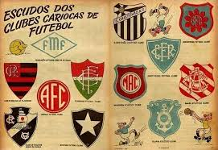

Sobre o Projeto
O site Futebol Carioca foi criado com o objetivo de preservar e divulgar a história dos clubes tradicionais do Rio de Janeiro que ajudaram a moldar o futebol brasileiro como conhecemos hoje.
Aqui, você encontrará informações sobre clubes como Bangu, Madureira, América, Olaria, Bonsucesso e São Cristóvão. Cada um desses times tem uma trajetória única, repleta de conquistas, personagens históricos e uma forte ligação com suas comunidades.
Além de resgatar memórias, o projeto visa valorizar a cultura suburbana e a paixão pelo futebol local — que muitas vezes é esquecida em meio ao futebol de massa.
Quem Somos
O projeto foi idealizado por João Pedro Medeiros Ventura, apaixonado por futebol e morador da cidade do Rio de Janeiro. O site foi desenvolvido como forma de contribuir com a memória esportiva carioca, integrando história, design e acessibilidade.